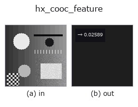

halcon_ext op• 資料種類:image → feature
• 呼叫:fullseye.apply(img, "hx_cooc_feature", a=0.5, b=0.5)(2-D 的模型是一張圖 + 兩個純量旋鈕 a,b∈[0,1])
• HALCON 對應:cooc_feature_image(其含義與參數可參考 HALCON 手冊)

*圖為在 128×128 合成輸入上實際執行的輸出。左為輸入，右為輸出。點雲以俯視散點顯示(亮度 = z)，一維序列為折線，體資料為沿 z 的最大值投影，影片為中間影格，複數影像為振幅；無法成像的回傳值直接顯示數值。*
掃描旋鈕 a(0.1 / 0.5 / 0.9，另一旋鈕取預設):
▸ hx_cooc_feature: 旋鈕 a 掃描 (文件網站)
掃描旋鈕 b(0.1 / 0.5 / 0.9，另一旋鈕取預設):
▸ hx_cooc_feature: 旋鈕 b 掃描 (文件網站)
量化後建構距離 d 的水平共生矩陣,回傳 Haralick 對比度(a=距離,b 選角度)。
把輸入 v（[0,1] 影像）以 int(v*8) 量化為 8 個灰階（clip 到 0〜7），把相隔距離 d 的像素對的出現次數做成 8×8 共生矩陣並加上其轉置（對稱化），再除以總和得到機率。回傳 Haralick 的 contrast sum p(i,j)*(i-j)^2 除以最大值 (8-1)^2 = 49 所得的 np.float64（值域 [0,1]）。
• a → 距離 d = 1 + int(a*3)（1〜4 像素）。
• b → 方向。b < 0.5 為水平（同一列向右 d 行），b >= 0.5 為垂直（同一行向下 d 列）。沒有斜向。
• 影像寬度（或高度）不大於 d、連 1 個像素對都無法構成時，視總和為 0 並回傳 0.0（不拋出例外）。
值越大，相鄰像素的灰階差越大（粗糙/對比度高的紋理）。由於只有 8 個灰階，細微的濃淡差會被壓到同一灰階。與 16 灰階的 skimage 實作 cooc_feature_matrix 在灰階數與正規化上不同，數值不一致。前接 hx_gabor 或 mean_image 等影像 op，後續作為 feature 用於比較或閾值判斷。
• 範例資料目錄(下載 URL / 授權) —— 2-D 用 skimage.data(BSD/公有領域)加合成圖,3-D 給出真實資料源(Stanford/PDS 等)的下載 URL。
• 運算子來歷與參考文獻 —— 該運算子族所依據的研究/方法出處。
• 演算法的正典(作者、年份)與用途見上面的族使用指南。
下面的程式已確認可以執行(與圖相同的輸入)。在 Studio 說明中，此區塊會變成按鈕，可當場載入並執行。
hx_cooc_feature 0.50 0.50
• gallery2d_halcon_ext — py -3.11 examples/gallery2d_halcon_ext.py
feature 作為輸入)halcon_ext)hx_gen_circle · hx_gen_ellipse · hx_gen_rectangle2 · hx_gen_checker_region · hx_gen_grid_region · hx_gabor · hx_fit_surface1 · hx_fit_surface2
*Provenance: ops.py — 2D 運算子登記表。本條目由 tools/opdocs.py md 自動產生(請勿手動編輯)。*
© 2026 Kazufumi Furuse — Fullseye operator documentation. Licensed under Apache-2.0.